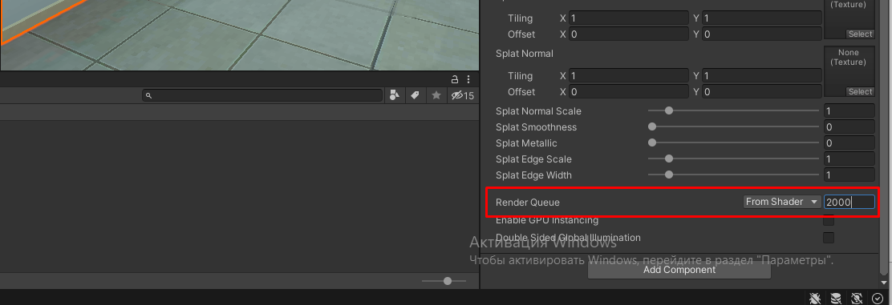

РАЗРАБОТКА СЦЕНЫ
Правила
- Сцена не должна превышать 200к полигонов
- 3д объект не должен превышать 10к полигонов
- Проверить текстуру объекта, размера файла н должен превышать 4мб
- Не использовать тиррейн больше чем 100м на 100м (Нужно разобраться, почему)
- Нельзя тиррейну создавать неровности
- Все ландшафтные неровности делать 3д объектом
- У кустов, деревьев и травы снять галочку с Billboard в настройках Edit Grass Texture
Инструкция
- Изучить методику
- Выписать объекты в «Выбор 3Д моделей для VR-тренажеров»
- Отдать на проверку продукт-менеджер
- Ждем покупки всех объектов, которых не хватает
- Создаем сцену у себя на компьютере
- Проверяем на количество полигонов
- Отдать на проверку
- После одобрения, создаем новую сцену в репозитории
- Переносим все используемые объекты в новую сцену
- Оптимизируем сцену
- Запекаем свет
Чеклист
Подготовке сцены для нового тренажера
- Алгоритмы и ассеты тренажера (см. таблицу https://docs.google.com/spreadsheets/d/19FDSJWAwDE2ar8zjWRrxY-PFgi8KgkIAvma4yldXMqI/edit#gid=0) собраны по методике
- Схема расстановки объектов согласована с методистом
- Найдены или отправлены в разработку все 3D модели, с которыми взаимодействуем (станки / приборы / инструменты )
- Внешняя часть собрана / найдена / отправлена на разработку (здание, местность...)
- Проверено, что все модели на сцене в общей сложности по количеству полигонов не превосходят 200 000.
Оптимизация виртуальной сцены для мобильной платформы HTC Vive Focus Plus
- Общее кол-во полигонов не более 200 000 (200к)
- Все шейдеры, использующиеся на моделях, мобильные
- Нет коллайдеров на объектах, с которыми не может быть взаимодействия
- Occlusion Culling запечен (https://docs.unity3d.com/ru/530/Manual/OcclusionCulling.html)
- Все статичные объекты в сцене помечены как статичные
- Свет запечен (См. инструкцию по запеканию света)
- Нет динамических источников света
- GPU instancing включено для материалов многих одинаковых объектов в сцене
- Все здание и все стены - один объект с одним материалом (для правильной запечки света и чтобы за ними не отрисовывались после постановки в очередь другие объекты с таким же материалом (см. офис в Пожарной безопасности)
- У всех динамических объектов отключены тени
- Для всех LOD-ов объектов (где они есть), тени запечены правильно
- Проверить, что для всего текста в TMPro проставлена галочка “Extra Padding property”
- Все стены всегда отрисовываются первыми (чтобы ненужные объекты за стенами не прошли тест Z-буфера)
- Пример:
- 
План
Projects in progress
Необходимые характеристики:
-- Модель в формате .fbx -- Не больше 10000 полигонов (самый верхний предел, т.к. от кол-ва полигонов зависит производительность, а пользователь в очках VR не видит разницы между 1к полигонов и 10к), желательно наличие LOD-ов для модели (например, 500 полигонов, 1000 полигонов, 5000 полигонов) -- стилистика реалистичная (VR тренажер, чтобы научить работников пользоваться реальным оборудованием)
Желательные характеристики:
-- PBR pipeline (текстурные карты отдельно, если они есть: normalmap, roughness map, albedo map, metallic map) -- Запеченные текстуры
- Открыть таблицу Выбор 3Д моделей для VR-тренажеров и копировать старый лист для соответствующего тренажера, если такого еще нет
- Переименовать лист
- Занести все необходимые наименования моделей в столбец 1 таблицы
- Найти модели в интернете, записываем URL ссылки в соответствующие ячейки напротив названия. Когда есть насколько вариантов, дублируем
Где искать
- Unity Asset Store (ввести в строку поиска русское название, потом английское название, далее добавляем “pack” для сборок моделей )
- Turbosquid (в параметрах поиска под Formats поставить галочку под форматом .fbx , а так же кликнуть на Rigged чтобы модель могла двигаться)
- CGTrader